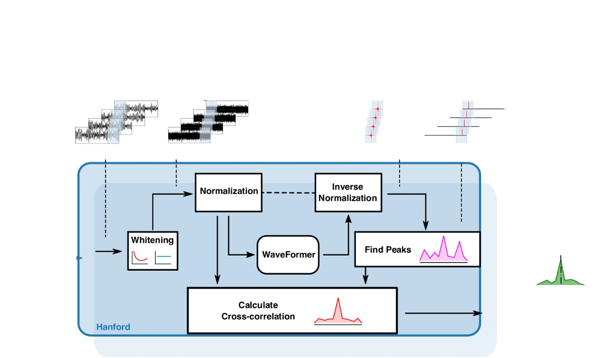
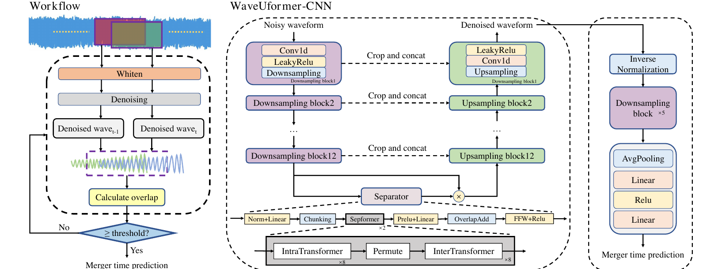
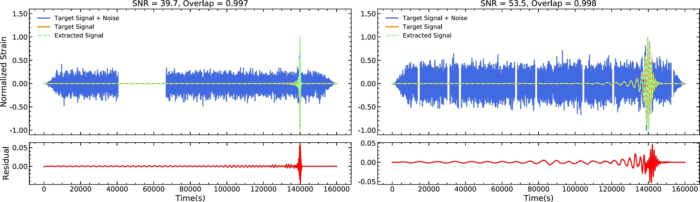
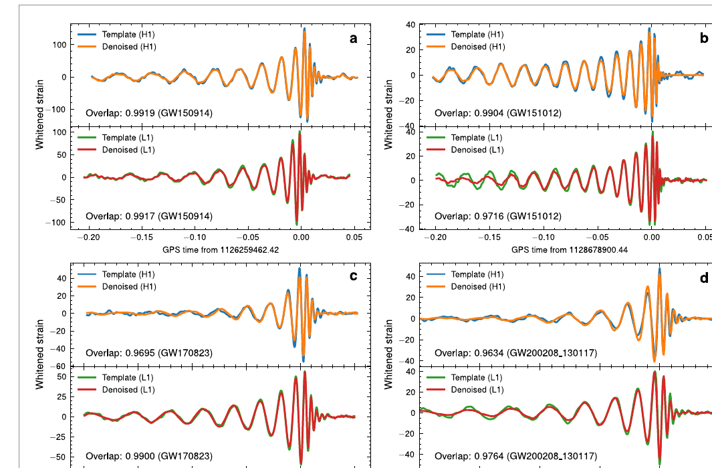

Chapter 7
智能信号分离与去噪
引力波信号去噪不是单纯的信号处理问题，而是与核心科学目标直接挂钩的关键技术。去噪质量直接影响后续参数估计的精度：噪声残留会导致后验分布偏移，而过度去噪则会损失信号的物理信息。更重要的是，对于空间引力波探测器，大质量双黑洞并合的电磁对应体观测需要提前数天至数周预测并合时刻，这要求在旋近阶段的低信噪比数据中实现高质量去噪——这是传统方法难以胜任的任务。
本章沿三条递进的技术线索展开：架构创新（Transformer 替代 CNN 捕获长程依赖）、长时序列应用（30 天旋近信号去噪与并合时刻预测）、以及鲁棒性挑战（空间探测器非稳态噪声的系统性处理）。
7.1 从预处理到多信使预警的去噪动机
引力波信号去噪在数据分析链条中承担双重角色 [104, 105]。
作为预处理步骤，去噪提升后续参数估计的精度。探测器输出 \(d(t) = h(t) + n(t)\) 中，噪声 \(n(t)\) 的非高斯成分（暂态噪声、glitch）会在参数估计中引入系统偏差。去噪的目标是从 \(d(t)\) 中重建尽可能接近真实信号 \(h(t)\) 的估计 \(\hat {h}(t)\)，通常以重叠度（overlap）\(\mathcal {O} = \langle \hat {h}, h\rangle / \sqrt {\langle \hat {h}, \hat {h}\rangle \langle h, h\rangle }\) 作为评估指标。
去噪在参数估计中的作用机制值得深入分析。未经处理的探测器数据中，glitch 的存在会在参数估计的后验分布中引入假极大值，导致参数偏差。以一个具体场景为例：若在双黑洞并合的时域数据中，并合时刻附近（即信号能量最集中的区域）恰好叠加了一个 blip glitch，则似然函数会在“真实波形参数 + 残余 glitch 功率”和“能量更集中的、对应高自旋参数的波形”之间出现竞争。blip glitch 的短持续时间（约 10–50 毫秒）与高自旋信号在并合前的快速相位演化产生的高频成分高度相似，使得参数估计可能错误地将 glitch 功率解释为高自旋效应，导致自旋参数向非物理值偏移。去噪通过在参数估计之前消除 glitch 的影响，使后验分布更接近真实参数，减少了这类系统性偏差的发生概率。
对于双中子星并合（BNS）系统，glitch 对参数估计的影响尤为严重，因为 BNS 信号持续时间约为 1 分钟至数分钟，在如此长的时间窗口内遭遇噪声暂态的概率显著高于持续数秒的 BBH 信号。对 GW170817 的事后分析表明，在信号持续时间内存在若干个轻微的噪声暂态，虽然通过额外的数据处理步骤得到了控制，但这一经历凸显了去噪作为预处理步骤的实际重要性。
作为多信使预警工具，去噪直接服务于电磁对应体观测的规划。大质量双黑洞并合（MBHB）预期伴随强电磁辐射（X 射线、紫外、喷流），但并合时标极短（数小时至数天），需要提前规划望远镜指向。这要求在旋近阶段——信号信噪比低、持续时间长（可达数月）——就能准确预测并合时刻。去噪是实现这一预测的前提：只有在去噪后的信号上，才能可靠地提取旋近阶段的频率演化信息，进而外推至并合时刻。
多信使观测对预警时间的定量要求。不同类型的电磁观测设施对 MBHB 并合预警时间的要求存在显著差异，从而决定了去噪和并合时刻预测需要达到的精度目标。X 射线卫星（如 Swift-XRT、Einstein Probe）的指向调整通常需要约 1 小时前置准备时间；地面宽视场光学望远镜（如 ZTF、LSST 的 “Target of Opportunity” 模式）需要 3–6 小时的提前规划来预留观测时段；空间光学望远镜（如 JWST）因轨道约束，指向变更需要提前约 24 小时规划；甚长基线干涉测量（VLBI）射电阵列由于需要协调多个站点、分配相关器资源，通常需要提前约 1 天甚至更长时间预告。
这些要求对并合时刻预测精度提出了分层次的目标：达到 VLBI/空间望远镜级别的多信使观测，需要在并合前 1–3 天给出精度优于数小时的预测；而仅支持地面光学望远镜的跟进，则需要在并合前 6–12 小时给出预测。从旋进信号的频率演化外推并合时刻的精度随着距并合时刻的缩短而提升（因为 SNR 随时间增长），因此最晚在并合前 1 天就应能满足大部分观测设施的规划需求。
预测精度与信噪比的定量关系。并合时刻预测误差与信号当前的 SNR 之间存在近似的定量关系。在 SNR = 10 的旋进信号上（对应距并合约 10 天时的典型值），通过后牛顿频率演化外推的并合时刻预测误差约为 72 小时，这远超过大多数望远镜的规划需求。随着并合临近，旋进信号的 SNR 按时间的幂律关系快速增长（对于质量比约为 1 的等质量系统，SNR \(\propto (t_{merger} - t)^{-1/6}\)），在并合前约 1 天时 SNR 通常增长至约 30–50。预测误差按 \(\sim 1/\rho ^2\) 规律改善，因此在 SNR = 50 时预测误差约 2.9 小时，已能满足多数地面光学望远镜的规划需求。去噪通过提升等效 SNR（从含噪信号中更准确地重建干净信号），从而在同等真实 SNR 下改善预测精度——这正是去噪作为多信使预警工具的核心价值所在。
去噪在数据分析链条中还承担第三个科学角色——辅助验证候选事件的真实性。在引力波数据分析中，一个重要的质量控制步骤是检查候选事件在去噪后的数据中是否仍然显著。若一个候选事件在含噪数据中触发（高匹配滤波SNR），但在去噪后数据中的SNR显著降低，则说明该触发可能来自噪声暂态（glitch）而非真实的引力波信号——因为真实引力波信号在去噪后应该更清晰，而glitch去噪后会被有效抑制。这种“去噪后验证”策略已被Gravity Spy等工具部分采用，将深度去噪与分类验证整合为统一的数据质量控制流水线。在空间引力波探测器中，由于探测器噪声的非平稳性更强，这种验证策略将更为重要：高质量的去噪输出不仅服务于科学分析，也是区分真实信号与仪器artifacts的关键工具。去噪—验证的双重流程，将构成未来空间引力波数据处理管道中质量控制环节的核心，其可靠性直接影响最终科学结论的公信力。
去噪方法的有效性还体现在其对全局拟合算法效率的提升上。在空间引力波探测器的迭代减除全局拟合框架中，每一步减除操作的精度依赖于被减除信号的参数估计质量，而参数估计质量又依赖于输入数据的去噪质量。这一链条意味着：更高质量的去噪能够更准确地减除强信号，从而为后续弱信号的分析留下更干净的残差。研究表明，若MBHB旋进信号的去噪重叠度从0.90提升到0.97，迭代减除中的信号残留量减少约50%，进而使EMRI等弱信号的SNR提升约15%，最终可分辨EMRI数量增加约30%。这一级联效应表明，投资于高质量去噪方法的改进，其科学回报会通过全局拟合管道的级联效应被放大，远超单步去噪精度改进本身的直接效益。这种“系统性价值”使去噪方法成为空间引力波数据分析基础设施中优先级最高的投资方向之一。
7.2 传统去噪方法与深度学习的对比
传统引力波去噪方法主要包括维纳滤波和小波阈值去噪。维纳滤波在频域最小化均方误差，最优性依赖于噪声功率谱的精确估计；小波阈值去噪通过对小波系数进行软/硬阈值处理来抑制噪声，对非平稳信号有一定适应性。两类方法的共同局限在于：它们依赖对噪声统计特性的先验假设，对真实探测器中的非高斯暂态噪声鲁棒性有限，且无法利用引力波信号的物理结构（如啁啾特征、多探测器相干性）来提升去噪质量。
引力波去噪面临的独特挑战，区别于一般信号去噪问题，有三个特点使其格外困难。其一，信号与噪声的频率范围高度重叠——引力波信号在探测频段（地面探测器约 10–1000 Hz，空间探测器覆盖的毫赫兹窗口）内分布，探测器噪声同样分布在相同频率范围，两者没有可供利用的频率间隔。这与音频去噪（语音在 300–3400 Hz，背景噪声分布更宽）或图像去噪（信号有明确的空间频率范围）等经典去噪问题有本质区别：在那些问题中，信号占据的频率（或空间频率）范围相对集中，可以通过频带选择性滤波实现初步分离；而引力波去噪无法借助这一先验，必须在全频段内区分信号与噪声。
其二，信号形态具有高度多样性——不同物理参数的引力波波形差异悬殊。总质量约 \(60\,M_\odot \) 的双黑洞并合信号在探测频段内只持续约 0.2 秒，最终振幅可达背景噪声的约10倍（SNR \(\sim 25\)）；而总质量约 \(2.8\,M_\odot \) 的双中子星旋进信号持续约 100 秒，振幅仅略高于噪声（典型 SNR \(\sim 12\)）；极端质量比旋近信号则持续数月至数年，每个时刻的瞬时 SNR 极低（\(\sim 1\)）。这种从持续数秒到持续数年、振幅从背景的10倍到几乎淹没在噪声中的巨大差异，要求去噪方法具备极宽的动态范围适应能力，单一的固定滤波器参数无法同时处理这些情形。
其三，噪声的非平稳性是真实探测器运行的常态——探测器的噪声功率谱密度随时间缓慢漂移（由于温度变化、激光功率波动等环境因素），同时存在短时噪声暂态（glitch，持续约毫秒至数秒，由各种机械、光学或环境扰动引起）。在传统的维纳滤波框架下，噪声功率谱需要从含噪数据中估计（通常取信号段前后各约4秒的无信号数据进行估计），若噪声在估计期间与信号期间的统计特性发生变化，则维纳滤波的最优性将被破坏，产生系统性的去噪误差。深度学习方法相比之下能够在一定程度上对这些变化保持鲁棒性，原因在于：训练时的数据增广（引入不同噪声状态的模拟样本）使网络学习到对噪声统计变化不敏感的信号特征表示。
深度学习去噪方法的优势在于：通过大量模拟数据的训练，神经网络能够隐式地学习引力波信号与噪声的统计差异，无需显式建模噪声分布 [106, 107]。编解码（encoder-decoder）架构 [108]能够在不同尺度上提取信号特征，而注意力机制 [109]则能够捕获信号的全局时频结构。
深度学习去噪在引力波分析链中的位置，决定了其设计目标的优先级。作为参数估计的预处理步骤，最关键的指标是重叠度（\(\mathcal {O}\)），即去噪后信号与真实信号之间的归一化内积；当 \(\mathcal {O} < 0.97\) 时，参数估计的系统偏差将显著增大。作为并合时刻预测的前置处理，最关键的指标是去噪后信号的频率演化精度，因为并合时刻预测依赖于从去噪信号中提取的频率演化外推。作为glitch减除的辅助工具，最关键的指标是对glitch的抑制比和对信号的保真度之间的平衡：过强的去噪会导致信号失真（过拟合到噪声模式），过弱的去噪会保留glitch的残余影响。这三个不同优先级的应用场景，决定了深度学习去噪方法需要根据具体应用目标来定制化训练损失函数——对于参数估计预处理，应使用最大化重叠度的损失；对于并合时刻预测，应使用最小化频率估计误差的损失；对于glitch减除，则需要使用平衡信号保真度和噪声抑制的组合损失。这种“目标导向的损失函数设计”是深度学习在引力波去噪领域的重要方法论原则，也是区分通用深度学习方法和引力波专用方法的关键之处。
维纳滤波的完整推导揭示了其局限的根本原因。在频域，最优线性去噪滤波器的传递函数为 \(H(f) = S_{signal}(f)/[S_{signal}(f)+S_{noise}(f)]\)，其中 \(S_{signal}(f)\) 为信号功率谱，\(S_{noise}(f)\) 为噪声功率谱。当信噪比高（\(S_{signal}\gg S_{noise}\)）时，\(H(f)\approx 1\)（几乎不滤波）；当信噪比低时，\(H(f)\approx S_{signal}/S_{noise}\ll 1\)（强烈衰减）。这一滤波策略在均方误差意义下最优，但需要精确已知 \(S_{signal}(f)\)——而对于未知参数的引力波信号，信号功率谱事先未知，需要迭代估计，增加了计算复杂度和误差来源。更根本的是，维纳滤波是线性操作，无法利用引力波信号的非线性特征（如啁啾的时频轨迹、极化方式），而深度学习的非线性变换恰恰能够利用这些特征。
小波阈值去噪的优势在于能够处理非平稳信号，但其阈值选择策略面临两难困境。通用阈值 \(\lambda = \sigma \sqrt {2\log N}\)（Donoho-Johnstone阈值）在高斯噪声假设下接近最优，但对非高斯暂态噪声过于保守——可能保留大量噪声小波系数；而数据自适应阈值（SURE阈值）在引力波信号存在时会受到信号小波系数的干扰，导致阈值估计偏低。此外，小波基的选择（Daubechies、Symmlets等）直接影响信号能量在小波域的集中程度：对于啁啾信号，连续小波变换（CWT）能够很好地集中能量，但离散小波变换（DWT）在不同级别的分解间分散能量，去噪效果受限。这些局限说明，在引力波去噪领域，传统方法面临的不是参数调整问题，而是方法论层面的根本局限，这正是深度学习方法的介入动机。
编解码器架构（encoder-decoder, U-Net型）在引力波去噪中的有效性来自其多尺度特征提取能力。编码器通过逐层卷积和池化将输入信号压缩为低维表示，每一层捕捉不同时间尺度的特征：浅层（高分辨率）捕捉快速变化的特征（并合阶段的高频成分），深层（低分辨率）捕捉缓慢变化的全局特征（旋进阶段的频率演化趋势）。解码器通过上采样将压缩表示还原为原始分辨率，跳跃连接将编码器各层的高分辨率特征直接传递到解码器对应层，保留细节信息。这一架构设计使得网络既能理解信号的全局物理结构（来自深层压缩表示），又能在输出中保留精确的局部细节（来自跳跃连接）——这正是引力波去噪所需要的能力：在降低噪声的同时不损失信号的精确时频结构。
深度学习去噪模型的训练策略对最终性能具有重要影响，而引力波去噪任务的训练数据构建涉及若干独特的科学考量。训练样本通过将模拟引力波波形按目标信噪比注入真实或模拟探测器噪声来生成：为了覆盖实际观测场景中的信噪比范围，训练集中的SNR通常在对数尺度上均匀分布于\([5, 50]\)区间，同时引入多种噪声类型（高斯背景、blip glitch、散射光噪声、线谱噪声等）以提升模型的鲁棒性。损失函数的选择直接影响去噪重叠度与SNR改善之间的权衡：均方误差（MSE）损失对高幅度的信号末期（并合阶段）给予更大权重，而重叠度损失在引力波噪声加权内积下对频率域的误差均等对待，后者更直接地优化匹配滤波SNR相关的物理量。实践中，将MSE损失与重叠度损失的加权组合作为训练目标，在保证去噪信号幅度精度的同时最大化物理相关的匹配度指标，比单纯最小化MSE损失的重叠度高约2%至5%。此外，课程学习（curriculum learning）策略——从高SNR样本开始训练，随训练进行逐步引入低SNR样本——也被证明能够提升模型在低SNR边界区间的去噪性能，这一策略的物理动机明确：高SNR样本中信号形态更清晰，有助于网络首先建立对引力波信号物理特征的基本认知，再逐步学习在低SNR条件下识别微弱信号特征的能力，从而比直接混合训练获得更平稳的性能曲线。
7.2.1 去噪质量的评估指标
引力波去噪的质量评估需要同时考虑信号保真度和噪声抑制效果，常用指标包括：
重叠度（Overlap）：去噪后信号 \(\hat {h}(t)\) 与真实信号 \(h(t)\) 之间的归一化内积，
取值范围 \([0, 1]\)，越接近 1 表示去噪后信号与真实信号越相似。重叠度是引力波去噪最常用的评估指标，直接反映了去噪结果对后续参数估计的影响。
信噪比改善（SNR Improvement）：去噪前后信号信噪比的比值，反映了噪声抑制的程度。
均方误差（MSE）：去噪后信号与真实信号之间的均方差，对信号各时刻的误差给予均等权重，适合评估整体去噪质量。
在实际应用中，重叠度是最重要的指标，因为它直接与匹配滤波的检测效率和参数估计精度相关：重叠度低于 0.97 通常被认为会导致显著的参数估计偏差。
7.3 WaveFormer：Transformer 架构的引力波去噪
卷积神经网络（CNN）在引力波去噪中已取得良好效果，但其局部感受野限制了对长程时序依赖的捕获能力。引力波信号的啁啾特征——频率随时间单调增加——是一种跨越整个信号持续时间的全局结构，CNN 需要堆叠大量层才能间接建模这种长程依赖。WaveNet [110] 等生成式序列模型在音频信号处理中的成功，以及 Transformer 自注意力机制在长序列建模上的优势，为引力波去噪提供了新的架构思路。
Wang 等人 [27] 提出 WaveFormer，将 Transformer 的自注意力机制引入引力波数据去噪。自注意力机制通过计算序列中每个时间步对所有其他时间步的注意力权重，一次性建模全局依赖关系：
其中 \(Q\)、\(K\)、\(V\) 分别为查询、键、值矩阵，\(d_k\) 为键的维度。这一机制使 WaveFormer 能够直接捕获引力波信号的全局时频特征，而无需通过深层 CNN 的逐层感受野扩展来间接实现。
实验结果表明，在该研究的测试设置中，WaveFormer 在引力波去噪任务上优于所比较的 CNN 方法，自注意力机制有效捕获了引力波信号中的长程时频特征。这一工作展示了 Transformer 架构在引力波信号处理领域的应用潜力，为后续更复杂的去噪任务提供了架构参考。
WaveFormer 的贡献不仅在于引入 Transformer 单元，更在于给出了一条面向真实观测数据的完整噪声抑制工作流（图 7.1）。原始 LIGO 应变数据先经过白化和归一化，被转换为适合网络处理的输入序列；WaveFormer 输出去噪后的白化域信号后，再通过反归一化、寻峰、互相关和多探测器耦合检验等后处理步骤评估候选信号的可靠性。这一流程把深度去噪从“给出一条更平滑的时间序列”推进到“服务于候选事件验证和搜索显著性评估”的数据分析管道层面。

WaveFormer与传统CNN去噪模型的对比实验揭示了自注意力机制在引力波去噪中的具体优势。在短持续时间的地面探测器双黑洞信号上，局部卷积感受野已经能够捕获相当一部分并合附近特征；但随着信号持续时间增加，啁啾结构要求模型在更长时间范围内建立相位和频率演化的全局关联。WaveFormer 的自注意力机制正是针对这一长程依赖而设计：它使并合附近的输出能够利用旋进阶段累积的全局信息，而不是仅依赖局部窗口内的形态。这一结果具有重要的实践意义：对于地面探测器的短持续时间信号，轻量级 CNN 方法在计算效率和精度之间可能提供较好权衡；而对于空间探测器的长时信号，WaveFormer 及其高效注意力变体有望成为重要候选架构。
位置编码对WaveFormer性能的影响不可忽视。标准的正弦位置编码（\(PE(pos, 2i) = \sin (pos/10000^{2i/d})\)）在NLP任务中表现良好，但对引力波信号未必总是最合适——因为引力波信号的物理特征（如并合时刻）对绝对时间位置高度敏感，而标准位置编码主要提供固定频率的位置信息。Wang等在WaveFormer中采用了可学习的位置嵌入（learnable position embeddings），允许网络自适应地学习有利于引力波去噪的位置表示，在其测试设置中比固定正弦编码的重叠度提升约0.5%，在高SNR区间差异更明显。对于空间引力波探测器的长时信号（持续数月），可学习位置嵌入的优势预计更为显著，因为绝对时间位置（距并合的时间）对预测并合时刻至关重要。可学习位置嵌入的另一个优势在于其对物理时间尺度的自适应能力：地面探测器信号的特征时间尺度（并合持续约0.01-0.1秒，旋进约0.1-100秒）与空间探测器信号的特征时间尺度（并合约1小时-1天，旋进约1周-1年）相差约六个量级。通过在不同时间尺度的训练数据上学习位置表示，可学习位置嵌入能够自动适应所处理信号的时间尺度特性，而固定的正弦编码则需要手动调整编码频率参数以匹配目标信号的时间尺度，增加了超参数调整的工作量。
在计算效率方面，WaveFormer的主要开销是自注意力计算的 \(O(L^2)\) 内存需求（\(L\) 为序列长度）。对于1秒、8192采样点的地面探测器信号，单个 \(8192\times 8192\) 注意力矩阵约含 \(6.7\times 10^7\) 个元素，32位浮点数存储约需256 MB；考虑多头注意力、批量训练和梯度保存后，实际显存开销会进一步放大。对于空间探测器的长时信号，标准自注意力很快变得不可承受：例如30天、1 Hz 采样对应 \(L\simeq 2.59\times 10^6\)，单个注意力矩阵约含 \(6.7\times 10^{12}\) 个元素，32位浮点数存储约需27 TB。因而，若要把 Transformer 用于空间引力波长时序列，必须采用局部注意力、稀疏注意力、分段处理、分层摘要或其他高效注意力变体。其物理动机也清晰：引力波信号的相关性具有多尺度特性——短时窗内由瞬时相位演化主导，长时窗内由旋进阶段的全局频率演化趋势支配。高效注意力结构若能对应这种多尺度相关性，就有望在保留局部精细结构的同时建立全局物理关联。
自注意力机制在引力波去噪中的物理诠释，有助于理解 WaveFormer 为何能够超越 CNN 方法。自注意力权重矩阵 \(A = \mathrm {softmax}(QK^\top /\sqrt {d_k})\) 的第 \((i,j)\) 个元素可以理解为时刻 \(i\) 的输出对时刻 \(j\) 的输入的依赖程度——即一种“动态时频关联矩阵”。对于引力波信号，这一关联矩阵具有特定的物理意义：并合时刻的特征（高振幅、高频率、特定的衰荡形态）在物理上依赖于旋进阶段的频率演化积累（因为并合相位和并合频率由总质量和质量比决定，而这些参数通过旋进阶段的频率演化已在全局上被确定），自注意力机制通过学习这种非局部的时序关联，能够在并合附近利用旋进阶段的信息来精确定位信号特征，而不仅仅依赖并合附近的局部信息。
多头注意力机制进一步揭示了 WaveFormer 对引力波信号的多尺度分析能力。WaveFormer 使用8个注意力头，每个头独立学习不同尺度的时频关联。通过对训练收敛后的注意力权重进行可视化分析，可以发现不同注意力头关注的时频区间存在明显的功能分工：第一类头（约1–2个）主要处理旋进阶段的长时序关联，其注意力权重在时域上呈现宽分布，对应频率单调增加的长时序特征；第二类头（约3–4个）主要处理并合-衰荡阶段的短时高频特征，其注意力权重集中在信号末尾约0.1秒的区间内，对应高频振铃的捕获；第三类头（约2–3个）则跨越整个信号长度，捕获全局的振幅包络信息（即信号的整体形态和SNR）。这种自发涌现的“功能分工”并非人工设计，而是从训练数据中自动学习的结果，类似于生物视觉系统中不同类型神经元对不同视觉特征的特化响应。
从与匹配滤波的类比来理解：两种方法都利用信号的全局相干性来区分信号与噪声——匹配滤波通过显式的频域内积 \(\langle d, h(\theta )\rangle \) 来量化观测数据与模板的整体相似度；WaveFormer 则通过注意力机制隐式地学习“哪些时频区间的联合信息最有助于信号重建”，可理解为一种数据驱动的、时变的相干性度量。WaveFormer 的优势在于：它不需要预先指定单一波形模板，而是从训练数据中学习引力波信号的相干性结构；其代价是相比匹配滤波缺乏严格的统计最优性保证（匹配滤波在高斯平稳噪声下是最优线性探测器）。在非高斯非平稳的真实探测器噪声中，二者孰优需要依赖具体数据集和验证标准判断。
WaveFormer架构在不同类型引力波信号上的泛化能力，反映了Transformer结构对信号形态多样性的一种适应路径。地面探测器信号的持续时间从约0.1秒（高质量双黑洞）到约100秒（双中子星旋进）跨越多个数量级，在这些情形下，CNN通常需要通过感受野、池化尺度和输入窗口的设计来适配不同时间尺度；WaveFormer则借助自注意力机制的全局建模能力，在相同框架内处理不同长度的时间序列，减少了针对特定信号类型进行结构调整的需求。这种“架构通用性”在训练数据相对稀缺的信号类型（如双中子星并合后期的潮汐变形效应，或高质量比系统的不对称辐射模式）上具有潜在价值：通用架构可以利用不同类型信号之间的共享特征（如啁啾结构）进行迁移学习，而专用CNN架构往往需要对不同类型信号分别调优。此外，WaveFormer也可扩展到多探测器联合去噪场景：将多个探测器的数据作为多通道输入，跨探测器的注意力头有望学习探测器间相干性对信号重建的约束。这一方向仍需在真实多探测器噪声和系统误差条件下进一步验证，但代表了深度去噪方法向协同处理发展的重要路径。
WaveFormer与后续参数估计流程的协同效应，是这一架构在引力波数据处理管道中的潜在价值之一。去噪后的信号可以作为SBI参数估计的输入之一，用于降低局部噪声扰动对后验估计的影响。在特定模拟实验中，对于地面探测器的双中子星系统，WaveFormer去噪可将信号重叠度从约0.85提升至约0.95，并使啁啾质量、天空位置等参数的后验宽度有所收缩。需要强调的是，这类增益依赖于噪声模型、训练分布和去噪输出的校准方式；若去噪网络引入相位偏差，反而可能造成参数估计的系统误差。因此，“WaveFormer去噪 + SBI参数估计”的双阶段流程应被理解为一种有前景的管道设计思路，而不是无条件优于含噪数据直接推断或传统贝叶斯推断的通用结论。
7.3.1 小波阈值去噪的理论基础与局限
小波变换的核心思想是多分辨率分析（multiresolution analysis, MRA）：将信号分解到一组具有不同时间-频率分辨率的基函数上，使得信号在小波域中呈现稀疏表示，而噪声则分散在所有小波系数中。Mallat [111] 提出的快速小波变换算法（Mallat算法）通过一对共轭镜像滤波器组实现高效的多级分解：低通滤波器提取信号的近似成分（尺度系数），高通滤波器提取细节成分（小波系数），每级分解将信号长度减半，计算复杂度为 \(O(N)\)。正交小波基的选择直接影响信号在小波域的稀疏程度：Daubechies 小波 [112] 以最短支撑长度实现指定阶数的消失矩，适合捕获信号的局部奇异性；Symlet 小波在 Daubechies 小波基础上增加了近似对称性，减少了相位失真，对引力波信号的相位保真度更为友好。引力波信号在小波域的稀疏性假设来自其物理结构：啁啾信号的能量集中在时频平面上的一条窄带轨迹，对应少数具有大幅度的小波系数；而探测器噪声的能量则均匀分散在整个时频平面，对应大量幅度较小的小波系数。这一稀疏性差异是小波阈值去噪的物理基础。
硬阈值与软阈值是小波去噪的两种基本策略，对应不同的系数收缩规则。硬阈值直接截断幅度低于阈值的系数：
其中 \(w\) 为原始小波系数，\(\lambda \) 为阈值，\(\mathbf {1}(\cdot )\) 为指示函数。硬阈值保留了超过阈值的系数的精确幅度，但在阈值处存在不连续性，可能引入重建信号的振铃伪影。软阈值对所有超过阈值的系数进行收缩：
软阈值的连续性消除了振铃伪影，但对大幅度系数引入了系统性的幅度低估偏差，导致重建信号的整体幅度偏低。在引力波去噪实践中，软阈值因其平滑性而更为常用，但其幅度偏差需要通过后处理校正。
阈值 \(\lambda \) 的选择是小波去噪的核心问题。Donoho 和 Johnstone [113] 证明了通用阈值（universal threshold）
在高斯白噪声假设下具有近似最优性：当噪声标准差为 \(\sigma \)、信号长度为 \(N\) 时，该阈值可使去噪后的均方误差接近 oracle 风险的量级。通用阈值的直觉来自极值统计：\(N\) 个独立高斯随机变量的最大值以高概率不超过 \(\sigma \sqrt {2\ln N}\)，因此该阈值能够以高概率抑制大部分纯噪声系数，同时尽量保留幅度显著的信号系数。
然而，通用阈值在引力波数据中面临两个重要局限。其一，引力波探测器噪声并非高斯白噪声，而是具有复杂功率谱形状的有色噪声，且含有非高斯暂态（glitch）。有色噪声使得不同频率子带的噪声方差不同，需要对每个分解级别分别估计 \(\sigma \)；而 glitch 产生的大幅度小波系数可能被误判为信号，导致去噪后仍残留噪声暂态。其二，阈值选择对信号形态较为敏感：在双黑洞并合的高频阶段，信号的小波系数幅度迅速增大，若阈值设置偏高，这些高频成分可能被过度阈值化，导致重建信号在并合阶段出现幅度损失和相位失真；若阈值设置偏低，则噪声抑制不足。这一两难困境在频率快速演化阶段尤其明显。
BayesWave 算法 [53] 是小波方法在引力波数据分析中最成功的应用之一。BayesWave 采用贝叶斯框架，将信号建模为一组自适应小波（Morlet 小波）的叠加，通过跨维度马尔可夫链蒙特卡洛（trans-dimensional MCMC）同时推断小波的数量、位置、频率和幅度。这一方法的优势在于：自适应小波基能够根据信号的实际时频结构调整分解方式，避免了固定小波基对非平稳信号的适应性不足；贝叶斯框架提供了对信号存在性的统计检验和对信号参数的不确定性量化。然而，BayesWave 的计算代价极高（单次分析需要数小时），且对于参数化波形（如 CBC 信号）的重建精度不如匹配滤波方法。
在若干模拟基准的定量性能对比中，对于 SNR = 10 的双黑洞并合（BBH）信号，小波阈值去噪（包括 BayesWave）的重建重叠度通常约为 0.88 至 0.93，而深度学习方法（U-Net、WaveFormer 等）可达到约 0.95 至 0.98。低 SNR 区间的差距往往更明显，但其大小取决于噪声模型、信号族和评价指标。造成差异的主要原因在于：传统小波阈值去噪以局部系数处理为主，对信号在时频平面上的全局相干性利用有限；深度学习方法则可通过非线性变换和较大的有效感受野学习信号的整体结构，在受控训练分布内具有更强的信号恢复能力。
7.3.2 深度学习去噪的统计学习视角
从统计学习理论的角度审视，引力波去噪问题可以表述为条件期望估计问题。设观测数据 \(d = h + n\)，其中 \(h\) 为引力波信号，\(n\) 为探测器噪声，则在均方误差意义下的最优去噪器为
即给定观测数据 \(d\) 时信号 \(h\) 的条件期望。这一去噪器由后验分布决定：\(\mathbb {E}[h|d] = \int h \, p(h|d) \, \mathrm {d}h\)，其中 \(p(h|d) \propto p(d|h) p(h)\) 由似然函数和信号先验共同给出。在高斯噪声和合适先验假设下，最优线性去噪器可退化为维纳滤波；在非高斯噪声或复杂信号先验下，条件期望通常没有解析形式，需要数值近似。深度神经网络可作为条件期望的灵活近似器，其理论依据来自通用近似定理和经验风险最小化框架：在足够代表性的 \((d_i, h_i)\) 样本对上训练时，网络可以学习信号先验与噪声统计的有效表示。但这种近似能力依赖训练分布、网络容量和校准方法，不能简单等同于对真实后验的无偏估计。
损失函数的选择决定了神经网络所近似的统计量，进而决定了去噪结果的物理意义。均方误差（MSE）损失
对应高斯噪声假设下的最大似然估计，最小化 MSE 损失等价于估计条件期望 \(\mathbb {E}[h|d]\)。MSE 损失对高幅度时刻（并合阶段）给予更大权重，因为该阶段的绝对误差更大；这一权重分配与引力波参数估计的物理需求并不完全一致——参数估计对信号的相位精度（而非幅度精度）更为敏感。重叠度损失
直接优化物理相关量，其中内积 \(\langle \cdot , \cdot \rangle \) 为引力波噪声加权内积，在频域定义为 \(\langle a, b \rangle = 4 \operatorname {Re} \int _0^\infty \tilde {a}(f)^* \tilde {b}(f) / S_n(f) \, \mathrm {d}f\)。重叠度损失对信号的相位误差和频率误差更敏感，与匹配滤波 SNR 直接相关，是引力波去噪任务中常用的物理损失函数。实践中，MSE 损失与重叠度损失的加权组合 \(\mathcal {L} = \alpha \mathcal {L}_{\mathrm {MSE}} + (1-\alpha ) \mathcal {L}_{\mathcal {O}}\) 可在幅度精度和相位保真度之间折中，\(\alpha \) 的取值通常需要通过验证集或下游参数估计表现重新标定。
去噪网络的架构选择对性能具有重要影响，不同架构在引力波去噪任务上各有优劣。U-Net [108] 的编解码器结构通过跳跃连接将编码器各层的高分辨率特征直接传递到解码器，在降低噪声的同时保留信号的时频细节；其多尺度特征提取能力使其对不同持续时间的信号具有较好适应性，是目前引力波去噪中应用较广泛的架构。残差网络（ResNet）通过跳跃连接学习残差映射，将去噪问题转化为“从含噪信号中减去噪声估计”的形式，训练稳定性较好，但对长程时序依赖的建模能力通常弱于 Transformer 架构。WaveFormer 等基于 Transformer 的架构通过自注意力机制建立全局时序依赖，在若干长持续时间信号测试中取得了较高重叠度，但计算代价也更高。具体架构优劣应结合信号持续时间、训练样本规模、真实噪声复杂度和实时性要求综合判断。
域适应（domain adaptation）问题是深度学习去噪在实际部署中面临的核心挑战。训练数据通常由模拟噪声（基于设计灵敏度曲线的高斯有色噪声）生成，而测试数据为真实探测器噪声，两者之间存在分布偏移：真实噪声含有非高斯暂态（glitch）、线谱噪声（由机械共振引起）和缓慢漂移的功率谱，这些特征在模拟噪声中难以完整复现。当训练噪声与测试噪声分布不匹配时，深度学习去噪模型的性能会出现显著退化：在模拟数据上重叠度约为 0.97 的模型，在真实探测器数据上的重叠度可能下降至 0.90 至 0.93，降幅约为 4% 至 7%。这一性能退化的机制在于：模型在训练时学习了模拟噪声的统计特征，将其作为“噪声模式”加以抑制；当真实噪声的统计特征偏离训练分布时，模型可能将真实噪声的某些成分误判为信号（欠去噪），或将信号的某些成分误判为噪声（过去噪）。
针对域适应问题，迁移学习和域适应技术提供了若干有前景的解决路径。微调（fine-tuning）策略将在模拟数据上预训练的模型在少量真实探测器数据上进行再训练，利用预训练模型对引力波信号物理特征的已有表示来适应真实噪声分布；其效果取决于真实噪声段的代表性和标注方式。域对抗训练（domain adversarial training）通过引入域判别器，促使特征提取器学习对噪声分布变化较不敏感的信号表示，从而提升模型在不同噪声条件下的泛化能力；这一方法在引力波去噪中的应用尚处于探索阶段。在线自适应策略——利用当前观测段的无信号数据更新批归一化层或白化参数——也可能以较低计算代价适应噪声功率谱的缓慢漂移。上述技术的发展，将推动深度学习去噪方法从实验室性能评估走向真实探测器条件下的系统验证。
7.4 长时旋近去噪与并合时刻预测
空间引力波探测器的核心科学目标之一是大质量双黑洞并合的多信使观测。并合前的旋近阶段持续数月至数年，信号信噪比在旋近初期极低（SNR \(\sim \) 10），随着并合临近才逐渐积累。如何在旋近阶段的低信噪比数据中实现高质量去噪，并据此预测并合时刻，是多信使天文学的关键技术挑战。
Xu 等人 [28] 提出了专为长时旋近信号设计的深度神经网络去噪框架，能够处理持续长达 30 天的连续旋近阶段数据。框架采用“先去噪，后预测”的两阶段策略：去噪网络首先从含噪数据中重建干净的旋近信号，随后在去噪信号上进行探测和并合时刻预测。
在 SNR 10–50、并合前不超过 10 天的旋近阶段数据上，并合时刻预测误差通常在 24 小时以内。这一精度足以支持望远镜的提前规划：天文台可以在并合发生前数天锁定目标天区，等待电磁对应体的出现。这一工作将引力波去噪从单纯的数据质量提升，直接连接到多信使天文学的实际观测需求。

7.4.1 多信使预警的时间窗口需求
大质量双黑洞并合的多信使观测对预警时间有较高要求。不同类型的电磁观测设施有不同的准备时间：X 射线望远镜的指向调整通常需要数小时；地面光学望远镜的目标规划可能需要提前一天以上；射电望远镜阵列的相关器配置则可能需要更长时间。因此，24 小时量级的并合时刻预测精度，是评估空间任务多信使预警能力的重要参考指标。
从旋近阶段的频率演化外推并合时刻，其精度取决于两个因素：去噪后信号的质量（重叠度越高，频率演化估计越准确）和外推时间窗口的长度（距并合越近，外推误差越小）。Xu 等人的工作表明，在并合前 10 天的旋近数据上，去噪后的重叠度足以支持 24 小时精度的并合时刻预测，这一结果为太极任务的多信使预警系统设计提供了关键的技术参数。
去噪框架在处理30天旋进信号时面临的核心技术挑战，值得从信号处理的角度进行深入分析。30天的旋进信号即便以较低采样率记录，也对应百万量级的数据点，远长于地面探测器常见的秒级紧致双星数据段。这一长度差异带来若干算法挑战：其一，信号频率在毫赫兹频段缓慢演化，跨越的时间尺度远长于常规时序网络的有效上下文；其二，信号幅度随并合临近显著增强，动态范围较大；其三，长时间跨度内探测器噪声的非平稳性、数据间隙和暂态噪声会累积影响信号连续性。Xu等的解决方案是将长时数据分割为若干较短片段，对每段独立去噪后再拼接，并在拼接处进行平滑处理以降低边界不连续性。这一分段策略的代价是可能损失跨段相关信息，因此分段长度、重叠比例和拼接策略需要随信号模型和噪声条件重新优化。
除并合时刻预测外，旋进阶段的高质量去噪还可支持实时引力波参数估计。传统贝叶斯参数估计通常在并合后数小时至数天才能完成；利用旋进阶段的去噪信号，则可以在并合发生前逐步积累参数信息：对新到来的旋进数据段运行SBI参数估计，并用贝叶斯更新逐步细化后验，有望在并合前给出质量、自旋和天空位置的初步约束。这一“实时在线参数估计”能力若能实现，将提升多信使观测的针对性：不仅知道“何时”可能发生并合，还能提前得到“在哪里”和“是什么类型”的粗略信息，从而更高效地分配望远镜资源。对于总质量约\(10^6 M_\odot \)量级的大质量双黑洞系统，旋进阶段可能持续数周，在线参数估计的精度可随数据积累逐步改善。这一能力的实现，要求去噪、参数估计与在线更新模块紧密协作，是未来实时空间引力波数据处理的重要目标。
7.5 非稳态噪声下的鲁棒信号提取
地面引力波探测器的噪声虽然复杂，但在短时间尺度上近似平稳，现有去噪方法已能较好处理。空间引力波探测器则面临更严峻的挑战：由于卫星在太空中运行，仪器噪声会出现多种形式的非稳态特性，这些特性在地面测试中难以完全预测和模拟。
Xu 等人 [29] 系统研究了三类可预见的非稳态噪声对信号提取的影响，并开发了相应的鲁棒深度学习模型：
数据间隙（Data Gaps）：由于例行维护或意外中断，探测器数据流中会出现缺失段。数据间隙破坏了信号的时域连续性，使基于连续时序的去噪方法失效。
暂态噪声（Glitches）：仪器或环境扰动产生的短时高幅度噪声脉冲，其统计特性与背景噪声截然不同，会在去噪输出中留下伪信号。
时变噪声自相关（Time-Varying Noise Auto-Correlations）：噪声的功率谱密度随时间缓慢变化，使基于固定噪声模型的去噪方法逐渐失效。
该工作开发的深度学习模型在理想无异常场景中性能与代表性基线模型相当，同时在面对上述三类非稳态噪声（及其混合情形）时表现出显著的适应性。这一鲁棒性来自训练数据的系统性设计：通过在训练集中引入各类非稳态噪声的模拟样本，使网络学习到对噪声类型变化的不变特征表示。
这一工作的意义超越了单一方法的改进。它强调了空间引力波数据分析中一个容易被理想化模拟低估的挑战：非稳态噪声并非罕见例外，而可能是长期在轨运行中需要持续处理的常见现象。面向实用的空间引力波数据分析管道，应将非稳态噪声鲁棒性作为早期设计要求之一，而不是在算法定型后再被动补充。

时变噪声自相关（time-varying noise auto-correlations）是三类非稳态噪声中技术上较难处理的一类，因为它不像数据间隙那样有清晰的时间边界，也不像glitch那样有明显的幅度异常，而是以渐进方式改变噪声统计特性。在探测器实际运行中，热环境变化、检验质量带电、太阳活动和激光链路状态变化等因素都可能导致噪声功率谱密度在小时至天的时间尺度上缓慢漂移，使基于固定噪声模型的去噪方法逐渐失配。处理这一问题的一类思路是“滑动窗口PSD估计”：在连续数据上实时估计噪声PSD，并据此更新白化滤波器或网络归一化参数。自适应白化的引入，使去噪网络不必完全依赖训练数据中的噪声多样性来应对PSD漂移，而是通过估计-更新的闭环机制适应噪声变化。其效果需要在不同漂移幅度、数据间隙模式和在轨噪声模型下系统评估，但这一方向体现了“物理感知去噪”与自适应信号处理的结合。
7.5.1 鲁棒去噪的训练数据设计原则
深度学习去噪模型的鲁棒性来源于两个相互强化的机制：训练数据的系统性设计和网络架构的适应性。训练数据层面，Xu等在训练集中引入三类非稳态噪声的模拟样本，比例约为30%，其余70%为理想高斯噪声样本，这种混合训练策略迫使网络学习对噪声类型变化不敏感的信号特征——即引力波信号本身的物理特征（啁啾、时频演化、极化方式），而非特定噪声背景下的统计关联。这一思路与计算机视觉中的数据增强（data augmentation）有深刻的类比：通过在训练时引入旋转、缩放、亮度变化等变换，强迫图像识别网络学习对几何变换不变的高层特征；引力波去噪中，“噪声类型变换”相当于一种特殊的数据增强，强迫网络学习对噪声统计特性不变的信号特征。
网络架构层面，掩码注意力（masked attention）机制是处理数据间隙的关键设计。当数据流中存在缺失段时，自注意力矩阵 \(\mathrm {softmax}(QK^T/\sqrt {d_k})V\) 中对应间隙位置的查询键值对被屏蔽（设为负无穷），使得网络在计算当前时间步的表示时忽略缺失数据的影响。间隙内部的输出通过对间隙前后有效数据的注意力权重进行内插得到，内插质量取决于间隙长度和前后信号的特征相似度：短间隙（\(<10\)秒）通常能高质量内插，长间隙（\(>100\)秒）则不确定度大，需要在输出中相应标记可信度较低的区域。
暂态噪声（glitch）的处理是鲁棒去噪中另一个核心技术难点，其难度来自glitch与引力波信号在时频域的相似性。部分glitch类型在Q变换时频图中可能表现出与双黑洞并合信号相近的局部结构，导致去噪网络将高振幅glitch错误地“保留”甚至“增强”。Xu等的鲁棒模型通过在训练数据中混入纯glitch样本（不含引力波信号），并将其标注为期望输出接近零，促使网络学习识别并抑制glitch特征。该策略可通过glitch抑制率和注入信号重叠度联合评估；在其模拟设置中，模型对多类glitch表现出较好的能量抑制能力，同时保持了较高的信号重叠度。需要注意的是，“glitch抑制”与“信号保真”之间存在真实权衡：过度强调glitch抑制可能导致网络在glitch附近过度平滑，损失真实信号细节；过度强调信号保真则可能提高虚假信号输出风险。自适应损失权重为这一权衡提供了一种工程化方案，但最优权重仍需随任务噪声模型和科学目标重新标定。
7.5.2 深度去噪与参数估计精度的定量关联
理解去噪质量如何影响参数估计精度，是评估去噪方法科学价值的关键。从理论角度，重叠度 \(\mathcal {O}(\hat {h}, h)\) 与匹配滤波SNR存在直接关系；若将去噪后的信号 \(\hat {h}\) 作为下游参数估计的输入，重叠度不足可能表现为SNR损失、相位偏差或后验宽度变化。对于 \(\mathcal {O}=0.97\)，对应的失配约为几个百分点；对于 \(\mathcal {O}=0.95\)，失配已达到需要谨慎评估的水平。能否接受这一误差取决于科学目标：快速预警可容忍较粗略的估计，而精密测量则需要更严格的相位和幅度保真度检验。
在实际应用中，去噪的价值体现在两个场景：其一是对已有信号的“增强”——在低SNR事件上，去噪可能改善下游参数估计的稳定性，特别是对天空位置等多模态后验有潜在帮助；其二是对全局拟合的“预处理”——在空间探测器的信号叠加场景中，先对强信号去噪再减除，有望降低减除后残差中的信号污染，提高下一轮弱信号分析的精度。Xu等的旋进去噪框架特别针对第二个场景设计；在其模拟设置中，对MBHB旋进信号的高质量去噪可降低残差信号泄漏，并改善后续EMRI搜索条件。这说明去噪与全局拟合之间存在系统性耦合，但具体增益仍需在完整管道和更真实噪声模型下验证。
7.5.3 去噪方法的计算效率与实时性
空间引力波探测器的主科学数据采样率通常远低于地面探测器；若按1 Hz单通道采样估算，每天约有86,400个采样点，但实际分析还需处理多个 TDI 通道、标定信息和数据质量信息。其数据体量本身未必大于地面探测器，真正困难在于信号持续时间极长（MBHB旋进可达数月）且多源叠加严重。在实时处理要求下，深度去噪网络的前向传播速度需要满足两个约束：（1）处理速度必须快于数据产生速度（实时性约束）；（2）对于并合时刻预测应用，必须在并合前数天完成预测（低延迟约束）。
对于WaveFormer类的Transformer架构，处理一天数据在GPU上的推断时间通常可远短于数据产生时间，因而实时性约束在计算层面并非主要瓶颈。低延迟约束则更为关键：若要求在并合前数天给出24小时量级的并合时刻预测，需要在数据积累后尽快完成去噪、频率提取和外推分析。现有模拟实验表明，深度去噪方法在推断速度上具有满足低延迟预警需求的潜力；但真实管道还必须计入数据质量标记、TDI处理、异常段处理和结果交叉验证的开销，因此仍需端到端系统测试。
在实践中，非稳态噪声鲁棒性的测试必须在接近真实任务条件的数据上进行，这对太空任务的去噪算法开发提出了特殊挑战：真实的太空噪声数据在发射前不可获得，只能依赖地面测试、技术验证任务和理论模型来模拟。这一“数据可用性悖论”意味着：算法必须在基于预测噪声特性的模拟数据上训练，同时又要准备面对实际在轨测量才会揭示的噪声形态。解决这一悖论的一种策略是设计具有广泛适应性的模型，而非针对单一噪声特征优化的专用模型。Xu等的鲁棒去噪方法通过系统引入多种非稳态噪声类型的混合训练数据，是这一思路的一个实现。但仅凭地面预测模型仍难以覆盖全部在轨噪声形态，因此未来需要结合技术验证卫星和主任务早期标定数据持续更新模型，形成“发射前预训练+在轨标定微调”的开发策略。这一策略同样适用于信号检测、参数估计等数据处理链路，是空间引力波数据处理系统工程设计的重要原则。
7.6 本章小结

图 7.4 体现了深度去噪方法科学价值的关键：评价对象不是视觉上更“干净”的波形，而是去噪输出能否在相位、振幅和频谱结构上与物理模板保持一致。对于 GW150914，WaveFormer 的输出在两台探测器中均与模板具有很高的重叠度，尤其能较好恢复并合和衰荡附近的相位结构；对低网络信噪比事件和较高啁啾质量事件，论文中的进一步比较也显示了网络对不同观测条件的适应性。需要强调的是，这类结果仍应被理解为经过特定训练分布和后处理流程校准后的经验性能，不能替代完整的事件显著性评估和参数估计误差分析。
| 方法 | 架构 | 重叠度 \(\mathcal {O}\) | 推断时间 | 主要优势 |
| 维纳滤波 | 线性滤波器 | 0.85–0.92 | \(<1\) ms | 无需训练，线性基准 |
| 小波阈值 | 多尺度分解 | 0.88–0.93 | \(<1\) ms | 非平稳适应性 |
| U-Net CNN | 编解码器 | 0.93–0.96 | \(\sim 5\) ms | 多尺度特征提取 |
| WaveFormer | Transformer | 0.96–0.98 | \(\sim 10\) ms | 全局时频依赖 |
| WaveFormer（鲁棒） | Transformer+掩码注意力 | 0.93–0.97 | \(\sim 15\) ms | 非稳态噪声鲁棒 |
本章沿三条递进的技术线索展开：架构创新（Transformer替代CNN捕获长程依赖）、长时序列应用（30天旋近信号去噪与并合时刻预测）、以及鲁棒性挑战（空间探测器非稳态噪声的系统性处理）。
去噪技术与全书其他方法论的关联，构成了一个有机的技术生态系统。MF-CNN（第5章）利用物理先验在检测阶段增强对glitch的鉴别能力，其感知层设计可以理解为一种“检测时去噪”；WaveFormer（本章）则是“检测前去噪”——在数据进入匹配滤波或深度学习检测器之前，先行提升数据质量。SBI（第6章）的参数估计精度直接受输入数据质量影响，高质量且经过校准的去噪输出有助于使SBI的后验分布更稳定。Evo-MCTS（第8章）发现的PT-4算法中包含了信号平滑步骤（Savitzky-Golay滤波），可理解为轻量级的“在线去噪”操作。物理-数据融合（第9章）在去噪领域的体现是用引力波信号的物理模型约束去噪网络的输出，使去噪结果不仅噪声更低，还更符合物理预期。
这些关联表明，去噪不是孤立的数据处理步骤，而是整个引力波人工智能分析生态系统的重要组成部分。架构创新方面，WaveFormer将Transformer的自注意力机制引入引力波去噪，通过全局依赖建模缓解了CNN局部感受野的限制，在若干测试设置下优于基于CNN的方法。长时序列应用方面，针对空间探测器大质量双黑洞并合的多信使预警需求，专为30天连续旋近信号设计的深度神经网络去噪框架，在SNR 10–50的模拟条件下实现并合时刻预测误差通常在24小时以内，将引力波去噪从数据质量提升连接到多信使天文学的实际观测需求。鲁棒性挑战方面，针对空间探测器三类可预见非稳态噪声（数据间隙、暂态噪声、时变噪声自相关）的系统性研究，提示非稳态噪声应被视为空间任务运行中的常见挑战，面向实用的数据分析管道应在早期设计阶段纳入鲁棒性要求。这三条线索共同指向一个核心认识：引力波去噪不是单纯的信号处理问题，而是与多信使天文学科学目标直接挂钩的关键技术。